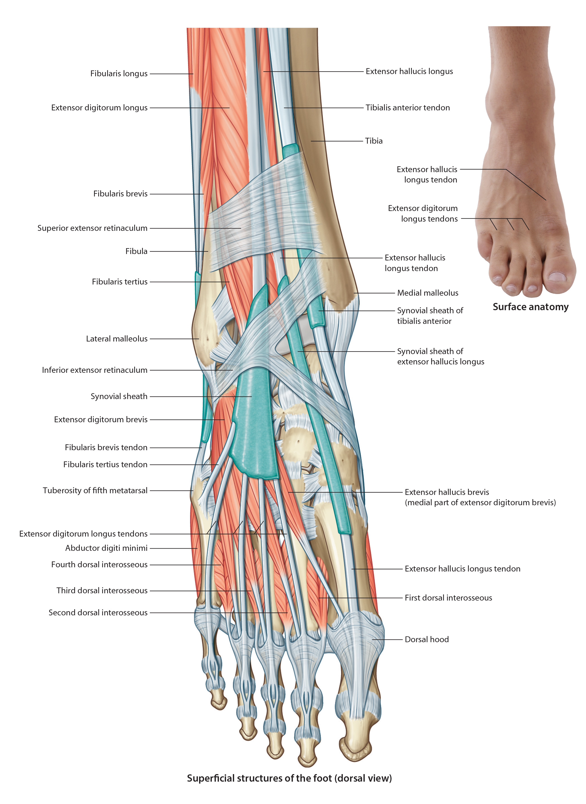

Lab 8 - Module 3 - Anatomy of the Dorsum of the Foot: Page 1 of 4
READINGS:Gray's Anatomy for Students (Fourth Edition): Pages: 643, 653-655, 657-658 |
×

Muscles of the Dorsum of the Foot
|  |
| Tap on image to enlarge |
| Two muscles originate on the dorsum of the foot. Additionally the tendons from the muscles of the anterior compartment cross the ankle joint and travel across the dorsum of the foot to their insertion sites. They are held in place by the extensor retinaculum. |
| Add the Extensor Hallicus Brevis muscle. |
|
Origin - Dorsal aspect of the calcaneous Insertion - Lateral aspect of the base of the proximal phalanx of the great toe Innervation - Deep Peroneal Nerve Action - Helps extend the proximal phalanx of the great toe |
| Add the Extensor Digitorum Brevis muscle. |
|
Origin - Dorsal and lateral aspect of the calcaneous Insertion - Lateral side of the tendons of the EDL for the 2, 3, 4 toes Innervation - Deep Peroneal Nerve Action - Helps extend the proximal phalanges of the 2, 3, 4 toes |